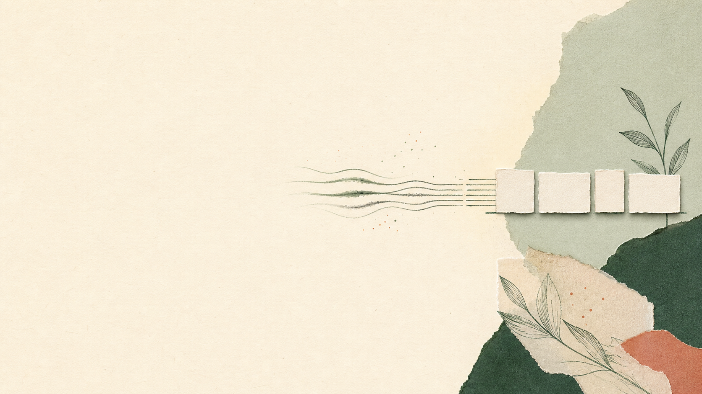

PTE Academic
Listening and Writing
Listen precisely. Select ideas. Write clearly.
Exact sentenceSelective notesClear summary
Write from Dictation
Listen once. Write the exact sentence.
Four WFD moves
Choose one move for the first uncertain point.
First letters or chunks
Exact order
One repair
Write from Dictation
Use the selected move once.
Compare the first attempts
Look at the same target in both sentences.
Item 1
Your attempt
Not saved yet.
Students should check the timetable online.
should · the timetable · online
Item 2
Your attempt
Not saved yet.
Regular practice improves both accuracy and confidence.
improves · both · accuracy · confidence
Write from Dictation
Fresh transfer. Less support.
First attempt and transfer
Compare the selected feature.
Cold attempt
Item 1
Not saved yet.
Students should check the timetable online.
Fresh transfer
Item 3
Not saved yet.
The office will send the updated schedule tomorrow morning.
Two listening jobs
The target changes.
Exact sentence
Write from Dictation
1Every word
2Original order
3Accurate spelling
Selected meaning
Summarize Spoken Text
1Main claim
2Essential support
3Useful qualification
Summarize Spoken Text
Listen once. Capture short notes.
Write 50–70 words
Use your notes. Save the complete first attempt.
Your notes
Not saved yet.
Not saved yet.
Not saved yet.
Not saved yet.
0 words
Compare the summary
One useful repair.
Your first attempt
Not saved yet.
Model summary
Sleep supports learning by strengthening new connections and integrating information with existing knowledge, which can improve flexible recall. However, it cannot compensate for material that was poorly understood, and students who sacrifice sleep for longer study may remember less. Researchers therefore recommend distributed practice, regular sleep and brief review rather than intense last-minute cramming.
Make one useful repair
Keep the change small and clear.
Choose one
Consolidation mechanism
Limitation or recommendation
Sentence boundary
Two useful rules
Keep one rule for each listening job.
Write from Dictation
My useful rule
Summarize Spoken Text
My useful rule
Write from Dictation
Optional fresh item.
Write from Dictation
Optional challenge item.
Compare Items 4 and 5
Optional comparison.
Item 4
Your attempt
Not saved yet.
The research team published its findings in several journals.
Item 5
Your attempt
Not saved yet.
The field study included participants from diverse linguistic backgrounds.
One stronger revision
Change one thing only.
Choose one
Main claim
Logical connection
Sentence control

PTE Academic
Write from Dictation
Keep more of one sentence after one listen.
Exact words
Correct order
Accurate spelling
Write from Dictation
Listen once. Write the exact sentence.
Write from Dictation
Four moves for one-play dictation.
Meaning groups
First letters or chunks
Exact order
One repair
Write from Dictation
Listen once. Write the exact sentence.
Compare the first attempts
One sentence at a time.
Item 1
Your attempt
Not saved yet.
The field study included participants from diverse linguistic backgrounds.
Check: field study · participants · diverse · backgrounds
Item 2
Your attempt
Not saved yet.
Students should check the timetable online.
Check: should · the timetable · online
Write from Dictation
Listen once. Write the exact sentence.
Write from Dictation
Listen once. Write the exact sentence.
Compare and rebuild
One complete sentence again.
Item 3
Your attempt
Not saved yet.
The research team published its findings in several journals.
Check: research team · published · findings · journals
Item 4
Your attempt
Not saved yet.
Regular practice improves both accuracy and confidence.
Check: improves · both · accuracy · confidence
Write from Dictation
Listen once. Write the exact sentence.
Write from Dictation
Listen once. Write the exact sentence.
Compare the new sentences
Items 5 and 6.
Item 5
Your attempt
Not saved yet.
The office will send the updated schedule tomorrow morning.
Check: will send · updated schedule · tomorrow morning
Item 6
Your attempt
Not saved yet.
Several students submitted their assignments before the deadline.
Check: students · submitted · their assignments · before
Small words and endings
Two sentence contrasts.
Final verb ending
The survey includes three sections.
Contrast: The survey include three sections.
Short grammatical word
The results are in the appendix.
Contrast: The results in the appendix.
Write from Dictation
Listen once. Write the exact sentence.
Write from Dictation
Listen once. Write the exact sentence.
Compare Items 7 and 8
Sentence shape and endings.
Item 7
Your attempt
Not saved yet.
Our meeting starts after the lunch break.
Check: meeting · starts · after · lunch break
Item 8
Your attempt
Not saved yet.
The language centre offers tutorials on Saturday mornings.
Check: centre · offers · tutorials · mornings
Write from Dictation
Listen once. Write the exact sentence.
Write from Dictation
Listen once. Write the exact sentence.
Compare Items 9 and 10
Longer sentences.
Item 9
Your attempt
Not saved yet.
Most employees completed the safety training online.
Check: employees · completed · safety training · online
Item 10
Your attempt
Not saved yet.
The final report includes several practical recommendations.
Check: report · includes · several · recommendations
Your WFD routine
Which move helped most today?